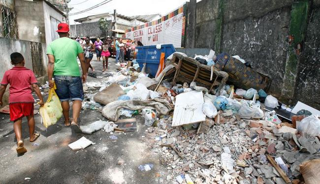
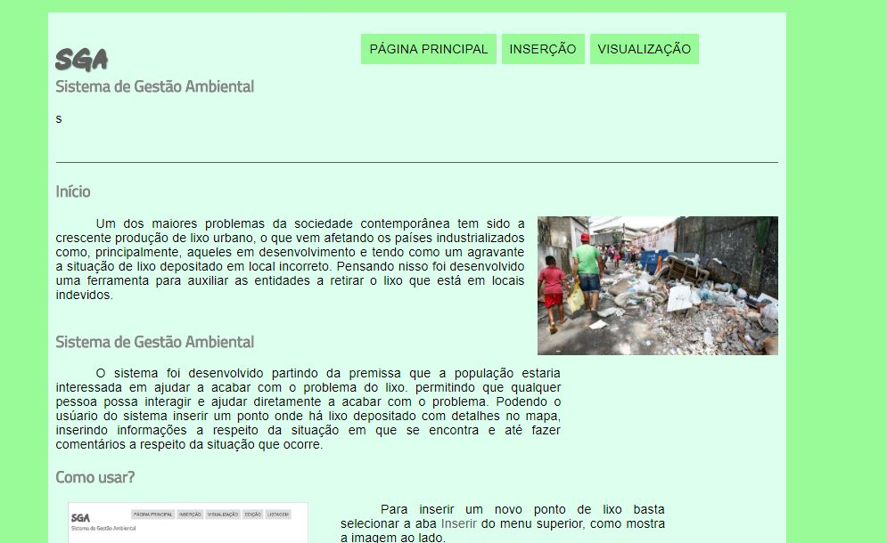
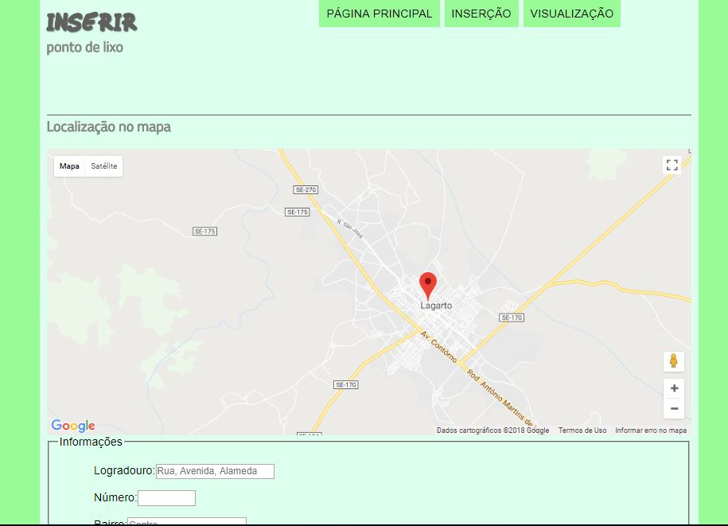

Um dos maiores problemas da sociedade contemporânea tem sido a crescente produção de lixo urbano, o que vem afetando os países industrializados como, principalmente, aqueles em desenvolvimento e tendo como um agravante a situação de lixo depositado em local incorreto. Pensando nisso foi desenvolvido uma ferramenta para auxiliar as entidades a retirar o lixo que está em locais indevidos.
O sistema foi desenvolvido partindo da premissa que a população estaria interessada em ajudar a acabar com o problema do lixo. permitindo que qualquer pessoa possa interagir e ajudar diretamente a acabar com o problema. Podendo o usúario do sistema inserir um ponto onde há lixo depositado com detalhes no mapa, inserindo informações a respeito da situação em que se encontra e até fazer comentários a respeito da situação que ocorre.
 Para inserir um novo ponto de lixo basta selecionar a aba Inserir do menu superior, como mostra a imagem ao lado.
 Dentro da aba Inserir, o sistema irá pegar a sua localização, caso isso não seja possível ou o lixo esteja em um local diferente, você poderá mudar a marcação do mapa com o clique do mouse. Depois de marcado a localização, você deve preencher um breve formulário a respeito do lixo. Feito isso, é só nos enviar. O meio ambiente agradece a sua colaboração.
Caso você queira ver os pontos onde há lixo cadastrado no nosso sistema basta visualizar a aba Visualização onde você poderá ver informações a respeito de todos os pontos cadastrados no SGA, clicando nos marcadores do mapa, você obterá detalhes a respeito daquele ponto.